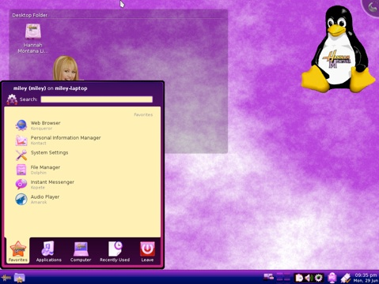

About

Hannah Montana Linux
Hannah Montana Linux is a free operating system based on Kubuntu with a Hannah Montana theme.
Hannah Montana Linux is fast, stable and powerful.
It includes a Hannah Montana themed boot screen, KDM, icon set, ksplash, plasma, color scheme, and wallpapers.
It is not vulnerable to Windows viruses.